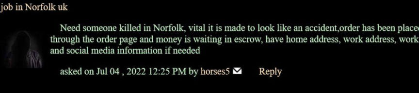
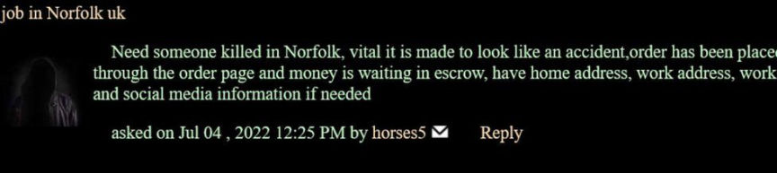

UK Woman Attempted to Hire a Hitman on the Dark Web
~2 min read | Published on 2023-02-09, tagged Indicted, Murder-for-Hire using 401 words.
A jury at the Norwich Crown Court found a married woman guilty of trying to hire a hitman on the darknet to kill a man following a brief sexual relationship.
According to media reports, 43-year-old Helen Hewlett, of Norfolk, UK, deposited more than £20,000 to a fraudulent murder-for-hire site on the dark web called Online Killers Market and placed an order for a hit on 50-year-old Paul Belton.
In the course of a 10-day trial, the jury was told that Hewlett and Belton had been flirting with each other while they worked at a factory in Norfolk. The flirting resulted in a sexual encounter in Hewlett's car at the factory's parking.
Belton, a married man, regretted his actions and ended the relationship. Hewlett, however, became obsessed and sought to continue the relationship. She began sending Belton threatening and sexually explicit messages via email.
Belton later changed jobs and moved to another company. Hewlett also got a job at the company and continued to pursue Belton. When her attempts failed, she filed false sexual harassment allegations against him. She also posted messages on Facebook saying Belton needed to be shot.
In the end, Hewlett turned to Online Killers Market, a murder-for-hire site on the darknet. She created an account under the moniker "horses5." She deposited bitcoin worth over £20,000 to the website's escrow account.

Hellewet then placed an order and shared Beltons name, picture, and home and work addresses. She also told the hitman to make sure the hit looked like an accident.
The murder-for-hire plot came to light after the Norfolk Police received a tip-off from an undisclosed source and launched an investigation. The investigators traced back the bitcoin deposited to the murder-for-hire site to Hellewet's Coinbase account.
Information acquired from Coinbase revealed that Hellewet had created the account in January 2022. She deposited all her savings, took a few loans, and deposited a total of £22,601 in 35 transactions. She then purchased and sent bitcoin worth £20,547 to the website.
The police arrested her on August 12, 2022. She gave the cops the login credentials to the murder-for-hire site. The police canceled the order but the bitcoin in the escrow account was not refunded.
0n February 8, 2023, the jury unanimously found Hellewet guilty of one count each of soliciting murder and stalking.
Hellewet faces a maximum sentence of life in Prison. Her sentencing is scheduled for April 2023.
Helen Hewlett as she was being arrested
According to media reports, 43-year-old Helen Hewlett, of Norfolk, UK, deposited more than £20,000 to a fraudulent murder-for-hire site on the dark web called Online Killers Market and placed an order for a hit on 50-year-old Paul Belton.
In the course of a 10-day trial, the jury was told that Hewlett and Belton had been flirting with each other while they worked at a factory in Norfolk. The flirting resulted in a sexual encounter in Hewlett's car at the factory's parking.
Belton, a married man, regretted his actions and ended the relationship. Hewlett, however, became obsessed and sought to continue the relationship. She began sending Belton threatening and sexually explicit messages via email.
Belton later changed jobs and moved to another company. Hewlett also got a job at the company and continued to pursue Belton. When her attempts failed, she filed false sexual harassment allegations against him. She also posted messages on Facebook saying Belton needed to be shot.
In the end, Hewlett turned to Online Killers Market, a murder-for-hire site on the darknet. She created an account under the moniker "horses5." She deposited bitcoin worth over £20,000 to the website's escrow account.

Hewlett looking for a hitman
Hellewet then placed an order and shared Beltons name, picture, and home and work addresses. She also told the hitman to make sure the hit looked like an accident.
The murder-for-hire plot came to light after the Norfolk Police received a tip-off from an undisclosed source and launched an investigation. The investigators traced back the bitcoin deposited to the murder-for-hire site to Hellewet's Coinbase account.
Information acquired from Coinbase revealed that Hellewet had created the account in January 2022. She deposited all her savings, took a few loans, and deposited a total of £22,601 in 35 transactions. She then purchased and sent bitcoin worth £20,547 to the website.
The police arrested her on August 12, 2022. She gave the cops the login credentials to the murder-for-hire site. The police canceled the order but the bitcoin in the escrow account was not refunded.
0n February 8, 2023, the jury unanimously found Hellewet guilty of one count each of soliciting murder and stalking.
Hellewet faces a maximum sentence of life in Prison. Her sentencing is scheduled for April 2023.